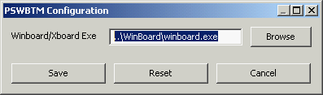

The WinBoard Gold Pack 4.4.0
For the ultimate WinBoard experience!

The WinBoard Gold Pack 4.4.0For the ultimate WinBoard experience! |
|
PSWBTM has to know where WinBoard is installed, in order to invoke it. This is really all that configuring it means. The WinBoard Gold Pack comes with PSWBTM already configured and fully opertional, so normally you would not have to do this. Only if during the installation PSWBTM somehow lost track of where WinBoard is located, (e.g. because you moved or renamed some folders), you would have to configure PSWBTM again.
To do it, you have to start up PSWBTM (to be found in the PSWBTM folder of the WinBoard Gold Pack download) by double clicking it. Then select the menu item "Tools -> Configuration". This pops up the following dialog:
Use the "Browse" button on the right to summon up a file-selector dialog. Use that to navigate to the WinBoard folder of the WinBoard Gold Pack (~\WinBoard). In the file-selector window you will then see a lot of black-Knight icons, for the winboard application and all its shortcuts. Double-click the icon named "winboard". This terminates the file-selector dialog, and copies the full name of the WinBoard application to the input field. Then click the "Save" button, and the configuration is done.
Note that it is possible to run several instances of PSWBTM at the same time. This only works properly, however, if you make sure they do not interfere with each other. This can be done by making a copy of the PSWBTM1 folder, and everything in it. If you want to run tournaments which need different settings in the winboard.ini file, you would similarly have to make a copy of the winboard.exe and winboard.ini (you could for instance put these in the same folder as the PSWBTM copy, say PSWBTM2). This PSWBTM copy would then have to be configured to work with the WinBoard copy. If you also want to run the same engine several times at once, you might have to duplicate their folders too (and install the copies in a PSWBTM). Some engines don't care how many times you run them, but others, especially the ones that write on files in their own folder, do not like it at all.